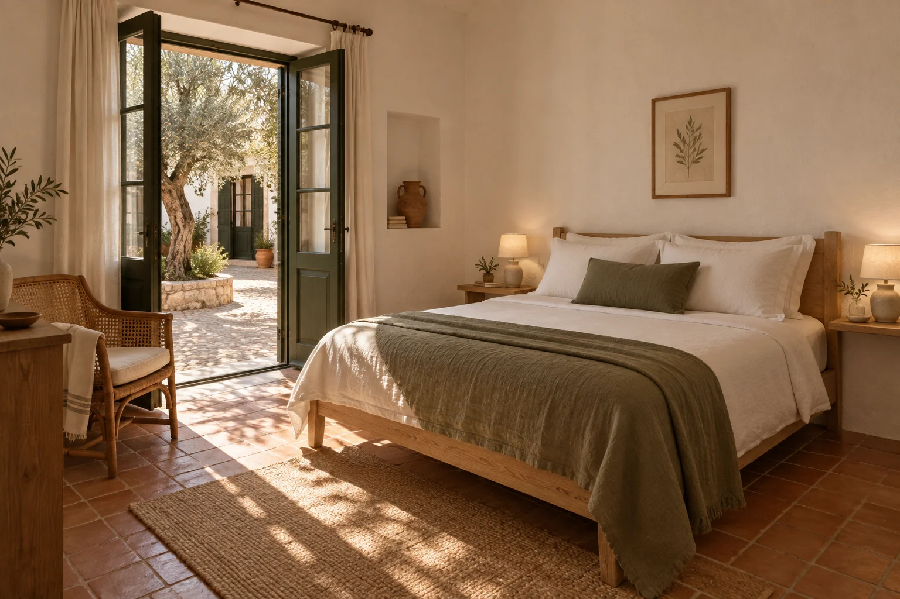
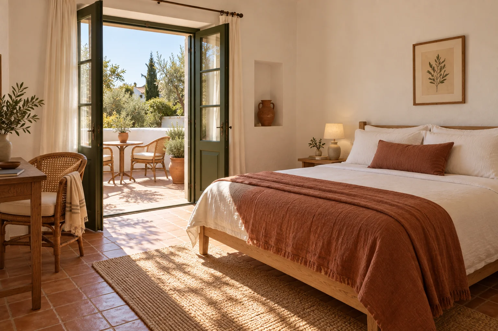
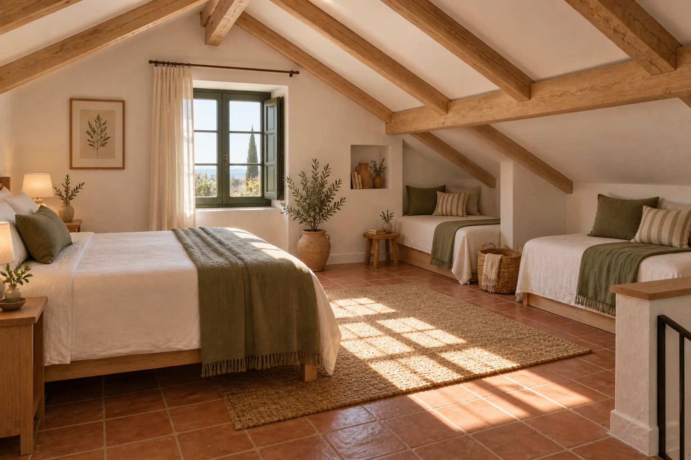

Sleep well.
Wake up here.
Three room categories, the same easy welcome. Choose courtyard shade, your own terrace or a loft to share. Breakfast, linen and the small comforts are included in every stay.
18 rooms · Three categories · One room per stay plan

Courtyard Room
Our most compact rooms open towards the shared courtyard. A queen bed, a cane reading chair and cool terracotta underfoot make an easy base for two. You may hear breakfast being laid out in the morning.
- Room size
- 24 m²
- Guests
- Up to 2
- Sleeping
- One queen bed
- Location
- Ground floor
Reached across the cobbled courtyard, with a small threshold at the door. The cobbles and threshold can make wheeled access difficult.
Illustrative fixed rate

Terrace Room
French doors connect the bedroom to a private terrace with two chairs and a small table. There is space to read inside, too. Look out over the house garden and rooflines; these are garden-facing rooms, without a sea view.
- Room size
- 31 m²
- Guests
- Up to 2
- Sleeping
- One queen bed
- Location
- First floor
Reached by one flight of stairs. There is no lift, and a small threshold leads from the bedroom to the terrace.
Illustrative fixed rate

Family Loft
A queen bed and two separate single daybeds share an open loft beneath timber beams. It suits a family who likes being together, with enough floor space to unpack. The sleeping area is open-plan, not two separate bedrooms.
- Room size
- 42 m²
- Guests
- Up to 4
- Sleeping
- One queen + two single daybeds
- Location
- First floor
Reached by one flight of stairs, without a lift. Sloping ceilings have lower headroom near the daybeds. No extra beds or cots are offered in this room.
Illustrative fixed rate
Just what
you need.
- Private shower room
- Fresh linen and towels
- Air conditioning
- Complimentary Wi-Fi
- Drinking-water refill
- Courtyard breakfast
- A local walking note
- Space in the shared courtyard
The house has no lift. Courtyard surfaces, thresholds and room layouts may not suit every access need. Please consider the access notes when choosing a room. The hotel has no pool, spa or private beach.
Travelling with children? Count everyone in your party when choosing a room. The Family Loft accommodates four; additional cots and beds are not available.